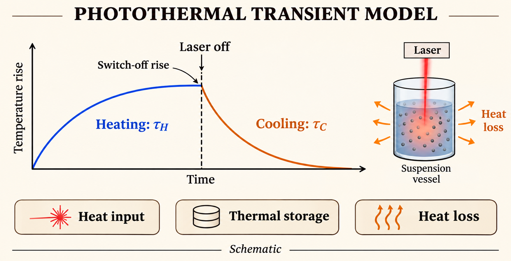

Heat input
The effective rate of thermal energy supplied during irradiation.
Photothermal modelling translates measured heating and cooling curves into response times, thermal amplitudes, and reference-calibrated heat-input estimates.
The analysis fits laser-on and laser-off segments separately and retains a clear distinction between measured, fitted, extrapolated, and reference-calibrated quantities.
The physical model
A representative bulk temperature describes the suspension. Effective thermal capacity accounts for storage, while a combined heat-loss conductance describes exchange with the surroundings.

The effective rate of thermal energy supplied during irradiation.
Energy accumulation associated with the changing system temperature.
Effective environmental loss proportional to the temperature rise.
Csys: thermal capacity, J K⁻¹ · Qin: heat-input rate, W · H: effective heat-loss conductance, W K⁻¹.
Fit the two segments
The fitted curve describes the approach toward an asymptotic rise under constant effective conditions.
τH: heating timescale.
ΔT∞:
model-extrapolated asymptotic rise.
This form assumes zero initial temperature rise. For a nonzero initial rise, retain its exponential term.
Once irradiation ends, the temperature decays toward ambient through effective environmental loss.
τC: cooling timescale.
ΔToff: rise at switch-off.
The ideal lumped relation is τ = Csys/H. Heating and cooling times are fitted separately.
Water-reference calibration
Water cooling supplies a reference heat-loss conductance. Comparative sample calculations use that scale with explicit thermal-capacity assumptions.
The container contribution is not independently available and is set to zero in this calculation. The resulting calibration therefore uses nominal liquid thermal capacity.
The switch-off estimator assumes compatible geometry and effective heat-loss behaviour. It remains distinct from equilibrium input or intrinsic conversion efficiency.
Extracted quantities
Measured, fitted, and derived quantities remain identifiable. Units, fitting intervals, material mass, and reference conditions accompany the values.
| Quantity | What it describes | Type |
|---|---|---|
| ΔToff | Temperature rise at the irradiation endpoint | Finite-time response |
| ΔT∞ | Asymptotic temperature rise from the heating fit | Model extrapolation |
| τH, τC | Heating and cooling response times | Fitted parameters |
| 1/τH, 1/τC | Reciprocal response times | Derived rate measures |
| ∫ΔT(t) dt | Temperature-rise area over a stated interval | Integrated transient measure |
| Qnet,off | Water-calibrated switch-off estimator | Comparative heat-input quantity |
| Qnet,off / mp | Heat-input estimator per dispersed material mass | Mass-normalized quantity |
MATLAB workflow